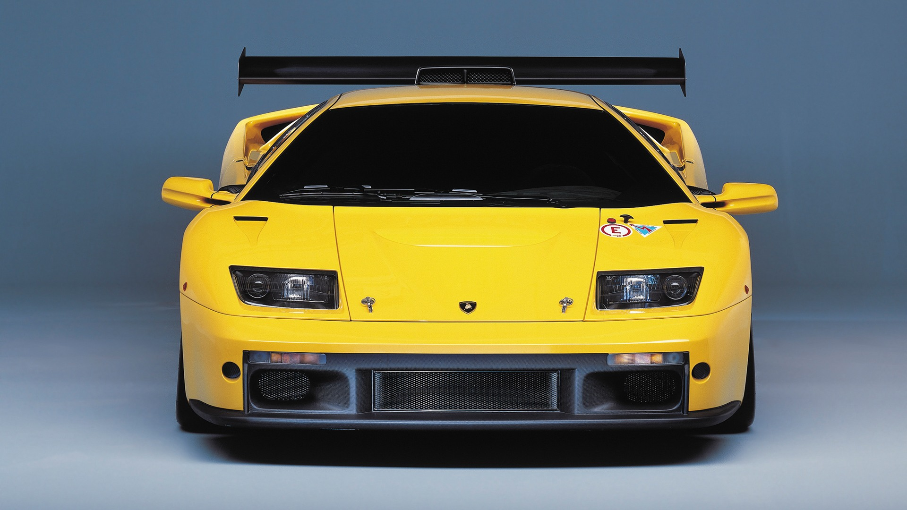
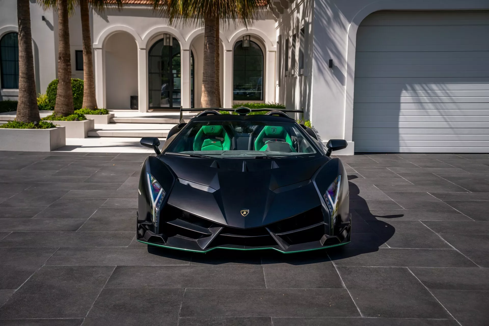
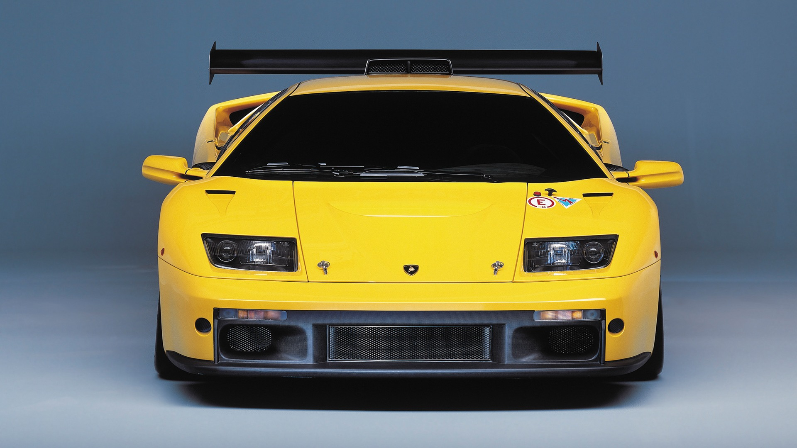
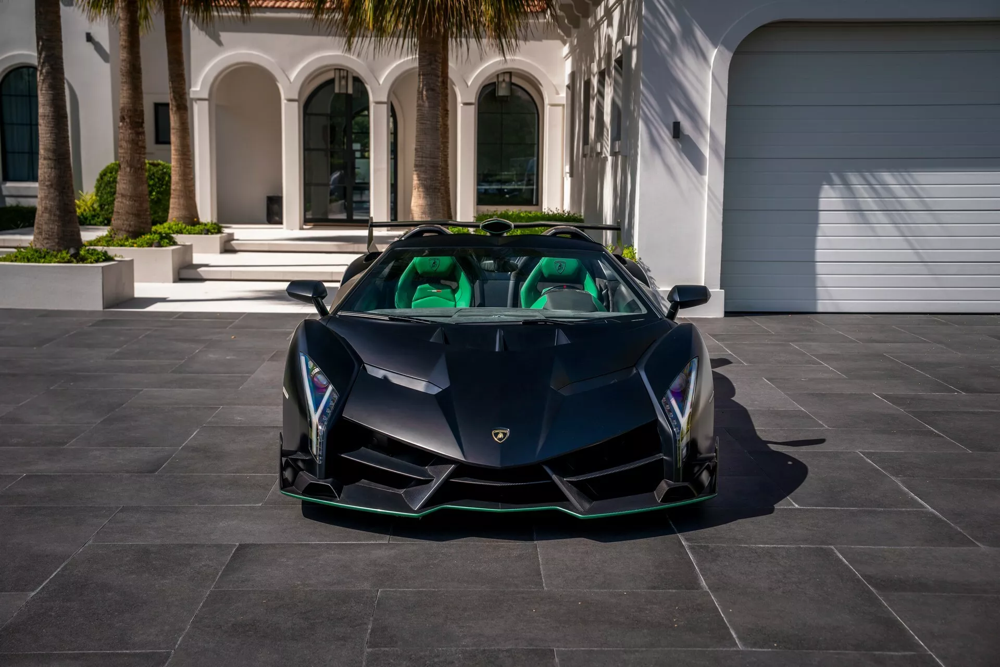

.jpg)
Lamborghini Automibili Moderna
Automobili Lamborghini S.p.A., comúnmente conocido como Lamborghini mal pronunciado habitualmente es un fabricante italiano de automóviles superdeportivos fundado en 1963 por Ferruccio Lamborghini, que anteriormente era un fabricante de tractores, cuya sede y oficinas centrales se encuentran ubicadas en Sant'Agata Bolognese, provincia de Bolonia y que actualmente forma parte del Grupo Volkswagen.
Terminada la Segunda Guerra Mundial, Ferruccio, quien había servido en un destacamento de transporte para el Ejército Italiano, comenzó a comprar sobrantes de vehículos militares para convertirlos en maquinaria agrícola. Tal fue el éxito de su nuevo negocio que, en 1960, Lamborghini ya era el tercer fabricante industrial italiano en el sector de la construcción de maquinaria agrícola, especialmente de tractores. Con las ganancias obtenidas, Ferruccio empezó una vida opulenta, adquirió algunas propiedades y, sobre todo, muchos coches deportivos como Alfa Romeo, Mercedes-Benz, Lancia, Maserati y Ferrari.
Era un admirador de Enzo Ferrari por la forma en que mantenía su empresa, pero siempre tuvo una dificultad: Ferruccio tenía problemas mecánicos con sus Ferrari. El motivo en particular, y la gota que colmó el vaso, fue el embrague de su Ferrari 250 GTB. Tras numerosas revisiones en el taller mecánico, todavía fallaba. Ferruccio decidió comunicarlo a uno de sus mecánicos quien, tras desarmarlo y verificarlo, descubrió que era el mismo que utilizaba en sus tractores, pero con un precio más alto al estar en un automóvil deportivo, lo que le enfureció. Cansado de tener que soportar estos inconvenientes, entabló una conversación con el mismo Enzo Ferrari que pasó a la historia debido a la negativa de Ferrari lo que posteriormente impulso a Ferrucio a crear su propia marca de autos deportivos de lujo siendo asi la competencia directa de Ferrari y revolucionando el automovilismo tanto en diseño como en concepto ya que se proponia opacar a Ferrari por medio de cubrir las carencias que se presentaban en los modelos de este último.
- V12
- 1966-1972 Lamborghini Miura
- 1972-1990 Lamborghini Countach
- 1990-2001 Lamborghini Diablo
- 2001-2010 Lamborghini Murciélago
- 2007-2010 Lamborghini Reventón
- 2011-2022 Lamborghini Aventador
- 2016-2017 Lamborghini Centenario
- 2020 Lamborghini Sian FKP-37
- 2021- Lamborhini Countach II
- V10
- 2003-2013Lamborghini Gallardo
- 2014-2024Lamborghini Huracán